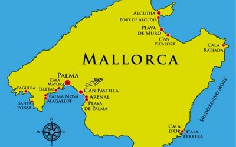

Kisah ini bercerita tentang Abdullah al-Majorci. Seorang mantan ulama besar Nasrani yang menjadi seorang muslim. Abdullah hidup saat Perang Salib masih berkecamuk. Lahir di Majorca (baca: Mayorka), Spanyol, kemudian pindah ke Tunisia di bawah kekuasaan Daulah Hafshiyah. Ia adalah seorang Nasrani yang taat dan tekun mempelajari agamanya. Dalam waktu singkat, ia berhasil menghafal setengah Injil.
Namun akhirnya, ia memeluk Islam, setelah mengetahui bahwa Muhammad, seorang nabi dari Arab, adalah nama yang disembunyikan kebenrannya oleh pasturnya. Setelah memeluk Islam, ia mengganti namanya menjadi Abdullah dan menulis kisah perjalanan hidupnya dalam buku Tuhfatu al-Arib fi Rad ‘ala ahli ash-Shalib.
Nama dan Laqobnya
Namanya adalah Abdullah bin Abdullah at-Tarjuman. Ini adalah nama yang ia pilih setelah memeluk Islam. Sebelumnya, namanya adalah Anselm Turmeda. Ia melaqobi dirinya dengan tarjuman karena aktivitasnya sebagai penerjemah sultan dalam surat-menyurat dengan bangsa Frank.
Palma, sebuah daerah di Majorca yang menjadi tempat kelahiran Abdullah al-Majorci.
Ia dinisbatkan kepada Majorca karena kota ini adalah kota kelahirannya.
Memeluk Islam Karena Nama Muhammad Adalah Kebenaran
Dalam buku yang ia tulis yang berjudul Tuhfatu al-Arib fi Rad ‘ala ahli ash-Shalib, Abdullah al-Majorci menceritakan kisah keislamannya:
Aku adalah seorang yang berasal dari Majorca -semoga Allah mengembalikannya kepada Islam-. Majorca adalah kota besar di pesisir laut Spanyol. Sebuah kota yang diapit dua gunung. Kota yang terdapat dataran rendah yang kecil. Itulah kota para pedangang. Banyak kapal-kapal besar bermuara, berniaga di pinggir lautnya. Hutannya adalah hutan zaitun dan tin. Dan pagarnya adalah 120 benteng lebih mengelilingi kota ini. Kota ini dimakmuri oleh banyak mata air. Semuanya berhilir ke lautan.
Ayahku adalah orang yang tinggal di perkotaan Majorca. Ia tidak memiliki anak kecuali aku. Ketika usiaku menginjak 6 tahun, ayah menyerahkan pendidikanku kepada seorang pastur. Aku membaca Injil di hadapan pastur itu. Hingga aku berhasil menghafal setengahnya hanya dalam waktu 2 tahun. Setelah itu, aku mempelajari bahasa Injil dan ilmu logika bahasa (mantiq), padahal saat itu usiaku masih 6 tahun.
Dari Majorca, aku pindah ke Kota Lleida, wilayah Catalonia. Pada masa itu, kota ini adalah kota ilmu bagi orang-orang Nasrani. Setiap 1000 atau 1500 orang pelajar Nasrani yang tinggal di sana, dipimpin oleh seorang Romo. Di sana aku mempelajari ilmu pasti selama enam tahun, kemudian mempelajari Injil dengan bahasa aslinya selama empat tahun.
Setelah menimba ilmu di Lleida, Abdullah pindah ke Balunia (Arab: بلونية) di wilayah al-Anbardiyah (Arab: الأنبردية). Kota ini juga merupakan kota pelajar Nasrani di zamannya. Setiap tahun 1000 orang lebih penuntut ilmu Nasrani datang dari segala penjuru untuk belajar di kota ini. Di sini Abdullah tinggal di gereja, dibawah pengasuhan Uskup Agung Nicole Martel. Nicole Martel memiliki kedudukan ilmu, agama, dan kezuhudan yang sangat tinggi di masyarakat. Ia sangat istimewa disbanding uskup-uskup lainnya.
Abdullah al-Majorci bercerita tentang hubungannya dengan Nicole Martel: Di bawah pengasuhan Nicole Martel, aku mempelajari pokok-pokok agama Nasrani dan hukum-hukumnya. Aku senantiasa dekat dengannya. Mengabdikan diri melayaninya. Dan mewakilinya dalam banyak kesempatan. Hingga aku pun menjadi murid kesayangannya. Puncak itu semua, ia serahkan padaku kunci-kunci rumahnya, perbendaharaan hartanya, tempat makan dan minumnya. Semuanya berada di tanganku. Kecuali satu kunci saja. Kunci sebuah ruangan kecil di dalam rumahnya yang biasa ia gunakan untuk menyendiri. Dugaanku, ruang itu adalah ruang harta-harta yang ia dapatkan dari hadiah dan pemberian. Aku tidak tahu persisnya.
Aku terus berguru dan mengabdi pada Nicole Martel selama 10 tahun. Hingga tiba suatu waktu, ia menderita sakit. Ia tidak bisa menghadiri pertemuan dengan uskup-uskup lainnya sebagaimana yang biasa ia lakukan. Para uskup mengadakan diskusi dan kajian keagamaan, sambil menunggu kehadirannya. Mereka sampai pada firman Allah ﷻ di Injil, tentang perkataan Nabi Isa, “Sesungguhnya akan datang setelahnya seorang nabi, namanya al-Baraqlith (Arab: البارَقليط)”.
Mereka terus berdiskusi, siapakah Nabi ini. Nabi yang dimaksud Injil akan datang setelah Isa. Setiap orang berbicara dan mengeluarkan pendapat sesuai dengan kadar ilmu dan pemahamannya. Perdebatan akan nama ini kian seru, namun diskusi berakhir tanpa titik temu.
Setelah itu aku datang menemui Nicole Martel. Ia bertanya padaku, “Apa yang kalian diskusikan pada hari ini, saat aku tidak hadir?” Kukabarkan padanya bahwa para uskup berselisih pendapat tentang nama al-Baraqlith. Fulan menjawab demikian. Dan Fulan menyebutkan nama yang lain. “Lalu apa pendapatmu?” tanyanya padaku. “Aku menjawab dengan jawaban Qadhi Fulan dalam tafsirnya terhadap Injil”, jawabku.
Kemudian ia berkata, “Engkau keliru. Fulan juga keliru. Dan Fulan lebih mendekati kebenaran. Namun yang benar, bukanlah nama-nama yang kalian sebutkan (dalam dikusi). Karena tidak ada yang mengetahui tafsir tentang nama yang mulia ini kecuali seorang ulama yang mendalam ilmunya. Kalian belum sampai level itu. Ilmu kalian masih sedikit.”
Aku segera mencium kakinya, dan berkata, “Wahai tuanku, Anda tahu aku berjalan dari negeri yang jauh demi belajar kepadamu. Aku juga telah mengabdi kepadamu selama 10 tahun. Aku telah mendapatkan banyak pengetahuan darimu yang aku tidak mampu menghitung banyaknya. Mudah-mudahan dengan kebaikanmu, kiranya engkau mau memberi tahu tentang tafsir nama itu.”
Tiba-tiba ia menangis. Lalu berkata kepadaku, “Wahai anakku, demi Allah engkau telah banyak memuliakanku dengan pengabdian dan pelayananmu. Tapi, aku khawatir jika nama ini kuberitahukan padamu engkau akan dibunuh (atau dimusuhi) oleh orang-orang Nasrani dari segala penjuru.”
“Tuan, demi Allah Yang Maha Agung, dan atas hak Injil serta apa yang dikandungnya, aku tidak mengatakan sesuatu kecuali atas perintahmu.”, jawabku meyakinkannya.
Ia berkata, “Wahai anakku, dulu aku pernah bertanya padamu saat pertama kali kau datang padaku dari negerimu, ‘Apakah tempat tinggalmu dekat dengan orang-orang Islam? Apakah mereka memerangi kalian dan kalian memerangi mereka? Semua itu untuk mengujimu seberapa jauh engkau benci dengan Islam. Ketauhilah wahai anakku bahwa al-Baraqlith adalah nama nabi mereka (umat Islam), Muhammad. Kepadanyalah diturunkan al-Kitab (Alquran) yang keempat, yang disebutkan melalui lisan Danial ‘alaihissalam. Ia mengabarkan bahwa kita itu akan diturunkan padanya. Agamanya adalah agama kebenaran. Dan millahnya adalah millah yang putih sebagaimana yang disebutkan di dalam Injil”.
Aku berkata padanya, “Tuan, bagaimana solusi dari masalah ini?” Abdullah bingung, sementara ia mempelajari Nasrani, hidup di lingkungan Nasrani, dan berguru kepada ulama besar Nasrani, tapi kebenaran ada pada Islam.
“Masuklah ke dalam agama Islam wahai anakku”, jawabnya.
“Apakah keselamatan itu dengan memeluk Islam?” tanyaku.
“Betul. Selamat di dunia dan akhirat.”, jawabnya.
“Tuan, sesungguhnya orang yang cerdas memilih yang terbaik dari yang dia ketahui. Jika Anda mengetahui kemuliaan agama Islam, apa yang menghalangimu darinya?” tanyaku lagi.
Ia menjawab, “Anakku, sesungguhnya Allah belum menunjukkanku tentang apa yang kusampaikan kepadamu berupa keagungan Islam dan kemuliaan nabi umat Islam kecuali saat aku telah tua dan fisikku sudah melemah, memang tidak ada udzur bagiku, bahkan itulah hujjah Allah untukku. Seandainya aku mengetahuinya ketika seumurmu, akan kutinggalkan segalanya. Aku akan memeluk agama yang benar ini. Dan cinta dunia adalah pokok dari segala keburukan.”
Maksud Nicole Martel, di kondisi tuanya jauh lebih sulit untuk memeluk Islam. Ia telah memiliki kedudukan. Seorang yang memiliki kedudukan lebih sulit untuk mengatakan kebenaran. Resiko yang ia tanggung lebih besar. Namun ia sadar itu bukanlah alasan. Kedudukan, penghormatan, harta, dan semua bagian dunia telah terlanjur mengecap di hatinya. Ia sadar cinta dunia adalah pokok keburukan.
Pelajaran bagi kita, belajarlah agama Islam sebelum kita menjadi siapa-siapa. Ketika kita sudah berkedudukan. Memiliki gelar akademik yang tinggi. Memiliki masa yang banyak. Maka gengsi untuk menerima kebenaran lebih besar. Apalagi kebenaran datang lewat orang yang lebih rendah kedudukannya dari kita. Datang dari mereka yang level pendidikannya jauh di bawah. Atau dari mereka yang miskin. Atau dari mereka yang jabatannya jauh di bawah. Belajarlah agama selagi Anda bukan siapa-siapa.
Abdullah al-Majorci melanjutkan. Kukatakan padanya, “Tuan, apakah engkau memerintahkanku untuk pergi menuju negeri kaum muslimin dan memeluk agama mereka?”
“Jika engkau cerdas dan berharap selamat, segera lakukan itu. Engkau akan mendapatkan kebaikan dunia dan akhirat.”, jawabnya.
“Akan tetapi anakku, apa yang kita bicarakan sekarang ini tidak disaksikan seorang pun selain kita. Sembunyikan ini sekuat kemampuanmu. Apabila engkau sebarkan, aku akan mendustakan semua ucapanmu. Aku tidak butuh pertolonganmu. Dan tidak manfaat bagimu menukil ucapanku tentang hal ini (di tengah-tengah umat Nasrani).” Ia memberi peringatan.
Maksudnya orang-orang tidak akan mempercayaimu kalau engkau mendengar hal itu dariku. Dan aku juga akan mendustakan ucapanmu di hadapan mereka. Jadi, engkau sendiri yang akan rugi dan menderita.
“Tuanku, aku berlindung kepada Allah dari yang demikian.”. kuucapkan janjiku sesuai yang dia inginkan.
Kemudian aku pamit kepadanya dan mulai menempuh cara untuk keluar dari daerah ini. Ia mendoakan kebaikan untukku dan membekaliku dengan 50 Dinar emas. Aku menempuh perjalanan laut, kembali ke kampung halamanku, Majorca.
Di Majorca, aku tinggal bersama orang tuaku selama 6 bulan. Setelah itu aku pergi menuju Pulau Sisilia dan tinggal di sana selama 5 bulan sambil menunggu tumpangan yang hendak pergi menuju negeri kaum muslimin.
Kendaraan yang kutunggu-tunggu pun tiba, dari Sisilia aku bersafar menuju Tunisia. Ketika aku sampai di Tunisia, ada rahib-rahib Nasrani yang mendengar kedatanganku. Mereka pun mendatangiku dan membawaku ke tempat mereka. Aku pun tinggal bersama mereka selama 4 bulan. Setelah itu aku bertanya kepada mereka, “Apakah di negeri ini, penguasanya menjamin lisannya seorang Nasrani?”
Saat itu, sultan yang berkuasa di Tunisia adalah Abu al-Abbas Ahmad rahiamhullah. Mereka memberitahuku bahwa penguasa negeri ini adalah penguasa yang baik. Salah seorang terdekatnya adalah Yusuf ath-Thayyib. Ia dikenal dengan kebaikannya. Aku pun sangat senang mendengar kabar tersebut.
Aku juga bertanya kepada mereka tempat laki-laki yang baik itu. Mereka menunjukkanku kediamannya. Aku pun menemuinya. Kujelaskan padanya tentang keadaanku dan sebab kedatanganku adalah untuk memeluk Islam. Laki-laki tersebut sangat gembira mendengar apa yang kukatakan. Ia ingin menyempurnakan kebaikan tersebut melalui dirinya sendiri. Lalu aku dipersilahkan menunggangi kudanya. Dan membawaku ke rumah Sultan Abu al-Abbas.
Sesampainya di rumah sultan, Yusuf al-Khoir mengabarkan sultan tentang diriku. Aku meminta izin sultan untuk tinggal di wilayahnya, dan ia pun mengizinkannya. Hal pertama yang ditanyakan sultan kepadaku adalah tentang umurku. Ku jawab, “Umurku 35 tahun.”
Kemudian ia bertanya, ilmu pengetahuan apa saja yang sudah kupelajari. Aku pun menjawabnya. Ia berkata, “Anda datang dengan niat baik. Masuk Islamlah dengan berokah dari Allah.”
Aku katakana kepada Yusuf, yang saat itu menjadi penerjemahku, “Katakan kepada Sultan, ‘Seseorang yang keluar dari suatu agama, maka para pemeluk agama tersebut akan menggunjingnya dan mencelanya. Aku berharap dengan kebaikan Anda agar kiranya mengumpulkan para pedagang Nasrani dan rahib-rahib mereka dan Anda mendengar apa yang mereka ucapkan di hadapanku. Saat itu aku umumkan keislamanku insya Allah.”
Ia menjawab melalui penerjemahnya, “Anda meminta seperti apa yang diminta Abdullah bin Salam kepada Nabi ﷺ saat ia hendak memeluk Islam. Rasulullah pun mengumpulkan para rahib Nasrani dan pedagang-pedagang mereka.”
Lalu sultan memasukkanku di sebuah ruangan dekat dengan majelisnya. Ketika orang-orang Nasrani datang, ia berkata kepada mereka, “Apa pendapat kalian tentang pastur (yakni Abdullah al-Majorci), yang baru saja datang tadi?”
Mereka menjawab, “Wahai tuan kami, dia adalah ulama besar agama kami. Sesepuh kami mengatakan bahwa mereka tidak melihat ada orang yang lebih tinggi derajat keilmuannya melebihi dia dalam agaka kami.”
Sultan kembali bertanya, “Apa yang akan kalian katakana jika dia memeluk Islam?”
“Kami berlindung kepada Allah dari yang demikian. Dia tidak akan melakukan hal itu”, jawab mereka.
Ketika sultan telah mendengar ucapan orang-orang Nasrani, ia pun memanggilku. Aku pun hadir di hadapannya. Aku pun mengucapkan dua kalimat syahadat dengan tulus di hadapan orang-orang Nasrani itu. Syahadatku seolah-olah menampar wajah-wajah mereka.
Serta-merta mereka menuduhku, “Dia mengucapkan hal itu karena ingin menikah. Karena pastur-pastur kami tidak menikah.”
Mereka pun keluar dari ruangan dengan kecewa dan bersedih hati. Setelah itu sulta memberiku empat dinar setiap harinya dan menikahkanku dengan putri al-Haj Muhammad ash-Sahffar. Saat aku hendak menikah, sultan menghadiahkanku 100 dinar emas dan memberikan sesetel pakaian baru. Dan aku pun menikah. Dari pernikahan tersebut aku memiliki beberapa anak. Di antaranya kuberi nama Muhammad. Aku berharap keberkahan menamainya dengan nama Nabi kita, Muhammad ﷺ.
Penutup
Syaikh Abdul Wahhab an-Najjar, salah seorang ulama Al-Azhar, berkisah tentang kata al-Bariqlith dalam kitabnya Qishash al-Anbiya. Dalam bukunya itu, ia menceritakan pernah berjumpa dengan salah seorang ahli bahasa Yunani kuno, Pastur Carlo Nino. Karena Injil ditulis dengan bahasa Yunani.
Sayikh bertanya kepada Pastur Carlo Nino, “Apa arti kata al-Bariqlithus dalam Bahasa Yunani kuno?” Ia menjawab, “al-Mu’azzi (sang penghibur)”. Syaikh menanggapi, “Terangkan maknanya secara harfiyah dalam bahasa Yunani kuno!” Pastur Carlo Nino menjawab, “al-Bariqlithus adalah yang banyak pujian.”
Kemudian Syaikh menanggapi, “Apakah Anda percaya dengan Muhammad (yang artinya yang terpuji)? “Anda terlalu banyak bertanya”, jawabnya. Kemudian ia pun meninggalkan Syaikh Abdul Wahhab an-Najjar.
Daftar Pustaka: – at-Tarjuman, Abdullah. 1988. Tuhfatu al-Arib fi Rad ‘ala ahli ash-Shalib. Beirut: Dar al-Basya-ir al-Islamiyah.